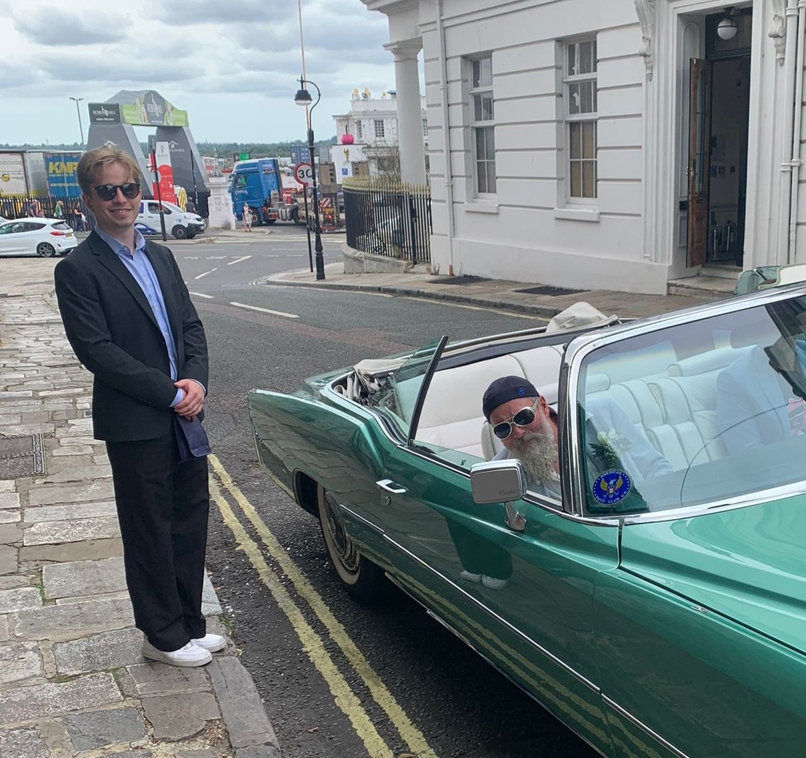

I am a Member of Technical Staff at Lute, where I train neural networks for robot manipulation.
I frequently post my projects on X. Here are a few cool models I've trained-
You can reach me at X, email, or see my resume.